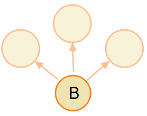

Revision Control
Using Git
The Basic Concepts
Created by Chang Yu-heng (張昱珩)
What is a revision control system?
It's a software which let you manage your project
much easier
Without it...
Anything you want to find
becomes a challenge to your memory
And it's only about a tiny project
So we need a powerful tool
And the most powerful revision
control tool right now is
Git
Who's using Git?
OK
What can Git do?
1. Anotate each line
hello.py
doesn't make sense
Who did that?
or
Which version did that?
hello.py
2. Merge
hello.py
hello.py
Let's do merge
融…合
diff
Patch 1
Patch 2
Git Gives You...
3-way merge
Git Can Do It For You
If There's Not Any Confliction
Usually Correct
But...
hello.py still doesn't print "hello"
Forget it!
3. Commit
A commit is a snapshot of your repository.
The direction of the arrow means: "derived from".
The graph means B derived from A.
Each commit only knows its parent(s).
It has no idea about its child(rden).
Cause the child(ren) not even born yet. So it cannot point to its child(ren).
If you want to do this:
You have to update B on each time a new child of B being born.
Doesn't make sense.
Look inside the commits

- ID (sha1)
- Size
- Tree (database)
- Parent
- Author
- Committer
- Date
- Message
4. Branch
Branches are just pointers which point to specific commits

"master" is a branch which points to commit "f30ab".

Different branches can point to the same commit.
So just branch it. It's cheap.

"HEAD" represents which branch/commit your are at now.

To "checkout" another branch/commit is easy. Just move your "HEAD".


With branches, you can keep different version of your work in the same repository.